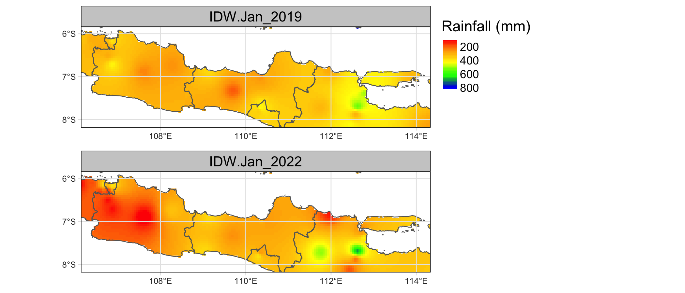
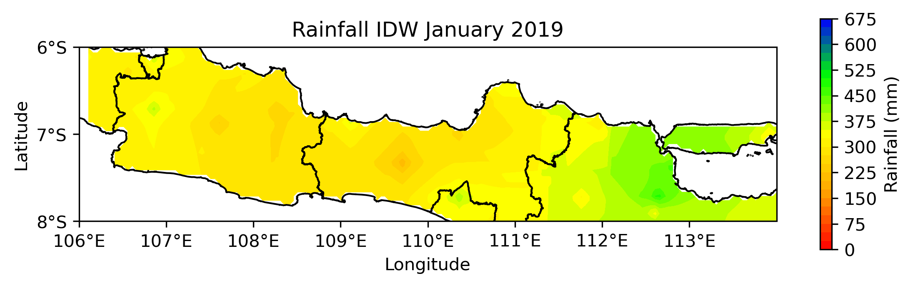

[1] "Hello, R!"Klimatologi Terapan - IPB University
Pastikan Anda telah memasang bahasa pemrograman R dan/atau Python sesuai dengan Sistem Operasi masing-masing, serta Text Editor/IDE yang dirasa nyaman (contoh: RStudio, Jupyter, VSCode, JetBrains PyCharm, atau Neovim 🗿)
| Sistem Operasi | Link unduh |
|---|---|
| Windows 10/11 | https://cran.r-project.org/bin/windows/base/R-4.3.3-win.exe |
| Ubuntu 22.04 | Ikuti langkah ini https://cran.r-project.org/bin/linux/ubuntu/ |
| MacOS | |
Note
Pemasangan package di dalam Google Colaboratory dapat dilakukan dengan perintah !conda install -c conda-forge nama-package
Data-data di bawah ini dapat diunduh pada halaman https://s.id/cdav-data
Anda perlu memasang beberapa package di bawah ini sesuai dengan bahasa pemrograman yang akan digunakan.
Learning by Case Study
Di dalam tutorial ini, data-data di atas yang telah Anda unduh akan digunakan langsung sebagai bahan praktik sehingga beberapa teori dasar tentang R & Python akan dijelaskan hanya secara singkat
| R | Python |
|---|---|
dplyr/data.table |
pandas/polars |
ggplot2 |
matplotlib/seaborn/bokeh |
rasterVis |
iris |
leaflet |
leafmap |
ncdf4/metR |
xarray/netcdf4 |
raster/stars/terra |
rasterio/rioxarray |
sf/sp |
geopandas/shapely |
dplyr, datatable, ggplot2, …, bahkan spasial, seperti raster, stars, sf, tmap, leaflet, …dask sehingga cocok untuk data besarmatplotlib)Tip
Untuk mengubah format data iklim GRIB menjadi netCDF, Anda dapat menggunakan software Climate Data Operator (CDO) dan perintahnya adalah cdo -f nc copy nama-file.grib nama-file.nc
readxl (R) atau pandas (Python)library(readxl)
library(tidyverse)
library(lubridate)
dats <- read_excel("data/BMKG-Jawa.xlsx", sheet = 2)
head(dats)# A tibble: 6 × 14
Tanggal Tn Tx Tavg RH_avg RR ss ff_x ddd_x ff_avg ddd_car lon
<chr> <dbl> <dbl> <dbl> <dbl> <dbl> <dbl> <dbl> <dbl> <dbl> <chr> <dbl>
1 01-01-1… 23.6 29.4 25.9 84 6 2.7 3 180 1 S 113.
2 02-01-1… 25 30.4 27.9 78 6 2.1 4 225 3 SW 113.
3 03-01-1… 23.2 30.4 27.6 79 0 0 5 270 3 W 113.
4 04-01-1… 24.6 30.3 27.4 82 26 2.6 3 270 2 SE 113.
5 05-01-1… 24.7 31 28.5 77 0 0 3 135 2 SE 113.
6 06-01-1… 23.4 30.8 26.8 85 6 2.9 5 270 1 W 113.
# ℹ 2 more variables: lat <dbl>, elevasi <dbl> Tanggal Tn Tx Tavg ... ddd_car lon lat elevasi
0 01-01-1975 23.6 29.4 25.9 ... S 112.6578 -5.8511 3
1 02-01-1975 25.0 30.4 27.9 ... SW 112.6578 -5.8511 3
2 03-01-1975 23.2 30.4 27.6 ... W 112.6578 -5.8511 3
3 04-01-1975 24.6 30.3 27.4 ... SE 112.6578 -5.8511 3
4 05-01-1975 24.7 31.0 28.5 ... SE 112.6578 -5.8511 3
[5 rows x 14 columns]Tanggal, tipenya masih berupa karakter (chr di R atau object di Python). Format tanggalnya adalah dd-mm-yyyy.Tanggal menjadi tipe date, Anda dapat menggunakan perintah ini# A tibble: 6 × 14
Tanggal Tn Tx Tavg RH_avg RR ss ff_x ddd_x ff_avg ddd_car
<date> <dbl> <dbl> <dbl> <dbl> <dbl> <dbl> <dbl> <dbl> <dbl> <chr>
1 1975-01-01 23.6 29.4 25.9 84 6 2.7 3 180 1 S
2 1975-01-02 25 30.4 27.9 78 6 2.1 4 225 3 SW
3 1975-01-03 23.2 30.4 27.6 79 0 0 5 270 3 W
4 1975-01-04 24.6 30.3 27.4 82 26 2.6 3 270 2 SE
5 1975-01-05 24.7 31 28.5 77 0 0 3 135 2 SE
6 1975-01-06 23.4 30.8 26.8 85 6 2.9 5 270 1 W
# ℹ 3 more variables: lon <dbl>, lat <dbl>, elevasi <dbl>NATanggal, Lokasi, Tavg, dan RRdats <- dats %>%
group_by(Tahun = year(Tanggal), Bulan = month(Tanggal)) %>%
summarise(Tavg = mean(Tavg, na.rm = TRUE), RR = sum(RR, na.rm = TRUE)) %>%
mutate(Bulan = make_date(Tahun, Bulan))
head(dats)# A tibble: 6 × 4
# Groups: Tahun [1]
Tahun Bulan Tavg RR
<dbl> <date> <dbl> <dbl>
1 1975 1975-01-01 26.7 349
2 1975 1975-02-01 26.7 369
3 1975 1975-03-01 26.7 369
4 1975 1975-04-01 27.1 190
5 1975 1975-05-01 27.3 207
6 1975 1975-06-01 27.2 55dats = dats.groupby([
dats['Tanggal'].dt.year.rename('Year'),
dats['Tanggal'].dt.month.rename('Month')
]).agg({'Tavg': 'mean', 'RR': 'sum'})
dats = dats.reset_index()
dats['Bulan'] = pd.to_datetime(dats[['Year', 'Month']].assign(Day=1))
dats.drop(columns=['Year', 'Month'], inplace=True)
dats.head() Tavg RR Bulan
0 26.651613 349.0 1975-01-01
1 26.707143 369.0 1975-02-01
2 26.719355 369.0 1975-03-01
3 27.126667 190.0 1975-04-01
4 27.264516 207.0 1975-05-01map_dfr() dari package purrr dapat digunakan.for untuk menyatukan semua sheet dalam 1 list, kemudian concat dari package pandas untuk menggabungkan semua sheet tersebut ke dalam 1 dataframe sehingga tipe datanya menjadi Dataframe.library(readxl)
library(dplyr)
sheets <- excel_sheets("data/BMKG-Jawa.xlsx")
sheets <- sheets[2:length(sheets)] # sheet 1 is metadata
dats <- map_dfr(sheets, ~{
sheet_name <- .x
sheet_data <- read_excel("data/BMKG-Jawa.xlsx", sheet = .x) %>%
# Pilih hanya kolom Tanggal, Tavg, dan RR
select(Tanggal, lon, lat, Tavg, RR) %>%
# Menambahkan nama stasiun
mutate(Lokasi = sheet_name) %>%
# Mengubah kolom Tanggal dari tipe chr menjadi date
mutate(Tanggal = as.Date(Tanggal, format = '%d-%m-%Y')) %>%
# Mengubah nilai 8888 dan 9999 menjadi NA
mutate(across(1:ncol(.), function(x) if_else(x == 8888 | x == 9999, NA, x)))
return(sheet_data)
})
dats# A tibble: 420,343 × 6
Tanggal lon lat Tavg RR Lokasi
<date> <dbl> <dbl> <dbl> <dbl> <chr>
1 1975-01-01 113. -5.85 25.9 6 StaMet_Sangkapura
2 1975-01-02 113. -5.85 27.9 6 StaMet_Sangkapura
3 1975-01-03 113. -5.85 27.6 0 StaMet_Sangkapura
4 1975-01-04 113. -5.85 27.4 26 StaMet_Sangkapura
5 1975-01-05 113. -5.85 28.5 0 StaMet_Sangkapura
6 1975-01-06 113. -5.85 26.8 6 StaMet_Sangkapura
7 1975-01-07 113. -5.85 26.9 6 StaMet_Sangkapura
8 1975-01-08 113. -5.85 26.2 11 StaMet_Sangkapura
9 1975-01-09 113. -5.85 27.6 3 StaMet_Sangkapura
10 1975-01-10 113. -5.85 25.4 7 StaMet_Sangkapura
# ℹ 420,333 more rows# Initialize an empty dataframe
dats = []
# Read each sheet in the file
sheets = pd.read_excel("data/BMKG-Jawa.xlsx", sheet_name=None)
# Iterate through each sheet
for sheet_name, sheet_data in sheets.items():
# Skip the first sheet (metadata)
if sheet_name.lower() == 'metadata':
continue
# Add the sheet name as a column
sheet_data['Lokasi'] = sheet_name
# Select only the 'Tanggal', 'Tavg', and 'RR' columns
sheet_data = sheet_data[['Tanggal', 'Lokasi', 'lon', 'lat', 'Tavg', 'RR']]
# Convert the 'Tanggal' column to datetime
sheet_data['Tanggal'] = pd.to_datetime(sheet_data['Tanggal'], format='%d-%m-%Y')
# Replace 8888 and 9999 with NaN
sheet_data.replace([8888, 9999], nan, inplace=True)
# Append the sheet data to the main dataframe
dats.append(sheet_data)
# Concatenate all the dataframes in the list
dats = pd.concat(dats)
dats Tanggal Lokasi lon lat Tavg RR
0 1975-01-01 StaMet_Sangkapura 112.65780 -5.85110 25.9 6.0
1 1975-01-02 StaMet_Sangkapura 112.65780 -5.85110 27.9 6.0
2 1975-01-03 StaMet_Sangkapura 112.65780 -5.85110 27.6 0.0
3 1975-01-04 StaMet_Sangkapura 112.65780 -5.85110 27.4 26.0
4 1975-01-05 StaMet_Sangkapura 112.65780 -5.85110 28.5 0.0
... ... ... ... ... ... ...
14240 2018-12-27 HalimPK_Jakarta 106.88926 -6.27036 28.0 NaN
14241 2018-12-28 HalimPK_Jakarta 106.88926 -6.27036 28.5 NaN
14242 2018-12-29 HalimPK_Jakarta 106.88926 -6.27036 28.7 NaN
14243 2018-12-30 HalimPK_Jakarta 106.88926 -6.27036 30.0 NaN
14244 2018-12-31 HalimPK_Jakarta 106.88926 -6.27036 28.2 9.9
[420343 rows x 6 columns]dats_miss <- dats %>%
group_by(Lokasi, lon, lat) %>%
summarise(missing_Tavg = sum(is.na(Tavg)), missing_RR = sum(is.na(RR)))
dats_miss# A tibble: 31 × 5
# Groups: Lokasi, lon [31]
Lokasi lon lat missing_Tavg missing_RR
<chr> <dbl> <dbl> <int> <int>
1 HalimPK_Jakarta 107. -6.27 8841 10358
2 StaGeof_Bandung 108. -6.88 160 1582
3 StaGeof_Banjarnegara 110. -7.33 3038 2005
4 StaGeof_Malang 112. -8.15 260 1450
5 StaGeof_Nganjuk 112. -7.73 2409 4258
6 StaGeof_Pasuruan 113. -7.70 719 1991
7 StaGeof_Sleman 110. -7.82 902 1226
8 StaGeof_Tangerang 106. -6.1 42 928
9 StaKlim_Banten 107. -6.26 1069 2620
10 StaKlim_JawaBarat 107. -6.5 201 2029
# ℹ 21 more rowsdats_miss = dats.groupby(['Lokasi', 'lon', 'lat']).agg({
'Tavg': lambda x: x.isna().sum(),
'RR': lambda x: x.isna().sum()
}).reset_index()
dats_miss.columns = ['Lokasi', 'lon', 'lat', 'missing_Tavg', 'missing_RR']
dats_miss Lokasi lon lat missing_Tavg missing_RR
0 HalimPK_Jakarta 106.88926 -6.27036 8841 10358
1 StaGeof_Bandung 107.59733 -6.88356 160 1582
2 StaGeof_Banjarnegara 109.70690 -7.33300 3038 2005
3 StaGeof_Malang 112.45000 -8.15000 260 1450
4 StaGeof_Nganjuk 111.76682 -7.73486 2409 4258
5 StaGeof_Pasuruan 112.63533 -7.70456 719 1991
6 StaGeof_Sleman 110.30000 -7.82000 902 1226
7 StaGeof_Tangerang 106.38000 -6.10000 42 928
8 StaKlim_Banten 106.75084 -6.26151 1069 2620
9 StaKlim_JawaBarat 106.75000 -6.50000 201 2029
10 StaKlim_JawaTengah 110.38120 -6.98470 11541 12379
11 StaKlim_JawaTimur 112.59790 -7.90080 793 499
12 StaKlim_Yogyakarta 110.35400 -7.73100 44 234
13 StaMetMar_Serang 106.11000 -6.11185 11391 12280
14 StaMetMar_TanjungEmas 110.41990 -6.94860 416 1196
15 StaMetMar_TanjungPerak 112.73530 -7.20530 330 1373
16 StaMetMar_TanjungPriok 106.88053 -6.10781 367 1683
17 StaMetMar_Tegal 109.12103 -6.86817 631 1683
18 StaMet_AhmadYani 110.37780 -6.97683 11556 12123
19 StaMet_Banyuwangi 114.35530 -8.21500 513 2147
20 StaMet_Budiarto 106.56389 -6.28670 1578 3309
21 StaMet_Citeko 106.85000 -6.70000 247 733
22 StaMet_Juanda 112.78330 -7.38460 272 1191
23 StaMet_Kemayoran 106.84000 -6.15559 4317 1329
24 StaMet_Kertajati 108.26300 -6.73440 190 491
25 StaMet_Perak 112.72390 -7.22360 11278 12177
26 StaMet_Sangkapura 112.65780 -5.85110 188 2495
27 StaMet_SoekarnoHatta 106.65000 -6.12000 113 716
28 StaMet_Trunojoyo 113.91400 -7.03976 396 1156
29 StaMet_Tuban 111.99177 -6.82290 26 679
30 StaMet_TunggulWulung 109.01490 -7.71890 254 2616dats_monthly <- dats %>%
group_by(Tahun = year(Tanggal), Bulan = month(Tanggal), Lokasi, lon, lat) %>%
summarise(Tavg = mean(Tavg, na.rm = TRUE), RR = sum(RR, na.rm = TRUE)) %>%
mutate(Bulan = make_date(Tahun, Bulan)) %>%
select(Bulan, Lokasi, lon, lat, Tavg, RR)
dats_monthly# A tibble: 13,835 × 7
# Groups: Tahun, Bulan, Lokasi, lon [13,835]
Tahun Bulan Lokasi lon lat Tavg RR
<dbl> <date> <chr> <dbl> <dbl> <dbl> <dbl>
1 1975 1975-01-01 StaGeof_Bandung 108. -6.88 22.5 200.
2 1975 1975-01-01 StaKlim_JawaTengah 110. -6.98 26.7 220
3 1975 1975-01-01 StaMetMar_TanjungPriok 107. -6.11 27.3 64.4
4 1975 1975-01-01 StaMet_Budiarto 107. -6.29 25.9 257
5 1975 1975-01-01 StaMet_Perak 113. -7.22 26.9 206.
6 1975 1975-01-01 StaMet_Sangkapura 113. -5.85 26.7 349
7 1975 1975-01-01 StaMet_TunggulWulung 109. -7.72 26.5 202
8 1975 1975-02-01 StaGeof_Bandung 108. -6.88 22.4 190
9 1975 1975-02-01 StaKlim_JawaTengah 110. -6.98 26.4 222.
10 1975 1975-02-01 StaMetMar_TanjungPriok 107. -6.11 26.6 285.
# ℹ 13,825 more rowsdats_monthly = dats.groupby([
dats['Tanggal'].dt.year.rename('Year'),
dats['Tanggal'].dt.month.rename('Month'),
'Lokasi', 'lon', 'lat'
]).agg({'Tavg': 'mean', 'RR': 'sum'}).reset_index()
dats_monthly['Bulan'] = pd.to_datetime(dats_monthly[['Year', 'Month']].assign(Day=1))
dats_monthly.drop(columns=['Year', 'Month'], inplace=True)
dats_monthly Lokasi lon lat Tavg RR Bulan
0 StaGeof_Bandung 107.59733 -6.88356 22.545161 199.5 1975-01-01
1 StaKlim_JawaTengah 110.38120 -6.98470 26.703226 220.0 1975-01-01
2 StaMetMar_TanjungPriok 106.88053 -6.10781 27.264516 64.4 1975-01-01
3 StaMet_Budiarto 106.56389 -6.28670 25.904000 257.0 1975-01-01
4 StaMet_Perak 112.72390 -7.22360 26.925806 206.1 1975-01-01
... ... ... ... ... ... ...
13805 StaMet_Sangkapura 112.65780 -5.85110 27.667742 575.9 2022-12-01
13806 StaMet_SoekarnoHatta 106.65000 -6.12000 27.270968 94.9 2022-12-01
13807 StaMet_Trunojoyo 113.91400 -7.03976 28.293333 89.8 2022-12-01
13808 StaMet_Tuban 111.99177 -6.82290 27.458065 296.0 2022-12-01
13809 StaMet_TunggulWulung 109.01490 -7.71890 27.293548 407.2 2022-12-01
[13810 rows x 6 columns]dats_mean <- dats %>%
group_by(Lokasi, lon, lat, Bulan = month(Tanggal), Tahun = year(Tanggal)) %>%
summarise(Tavg_av = mean(Tavg, na.rm = TRUE), RR_av = sum(RR, na.rm = TRUE),
Tavg_sd = sd(Tavg, na.rm = TRUE) , RR_sd = sd(RR, na.rm = TRUE))
dats_mean# A tibble: 13,835 × 9
# Groups: Lokasi, lon, lat, Bulan [397]
Lokasi lon lat Bulan Tahun Tavg_av RR_av Tavg_sd RR_sd
<chr> <dbl> <dbl> <dbl> <dbl> <dbl> <dbl> <dbl> <dbl>
1 HalimPK_Jakarta 107. -6.27 1 1980 25.6 116 0.791 10.0
2 HalimPK_Jakarta 107. -6.27 1 1981 25.2 80 1.00 22.4
3 HalimPK_Jakarta 107. -6.27 1 1982 25.2 18 1.08 6.24
4 HalimPK_Jakarta 107. -6.27 1 1983 26.7 108 0.693 22.9
5 HalimPK_Jakarta 107. -6.27 1 1984 25.4 113 0.591 17.5
6 HalimPK_Jakarta 107. -6.27 1 1985 25.5 254 1.00 26.1
7 HalimPK_Jakarta 107. -6.27 1 1986 26.0 65 1.01 18.0
8 HalimPK_Jakarta 107. -6.27 1 1987 25.4 138 0.967 17.1
9 HalimPK_Jakarta 107. -6.27 1 1988 26.5 58 0.687 12.2
10 HalimPK_Jakarta 107. -6.27 1 1989 25.9 151 0.772 25.6
# ℹ 13,825 more rowsdats_mean = dats.groupby(['Lokasi', 'lon', 'lat',
dats['Tanggal'].dt.month.rename('Year'),
dats['Tanggal'].dt.year.rename('Month')]).agg({
'Tavg': ['mean', 'std'],
'RR': ['sum', 'std']
}).reset_index()
dats_mean.columns = ['Lokasi', 'lon', 'lat', 'Bulan', 'Tahun', 'Tavg_av', 'Tavg_sd', 'RR_av', 'RR_sd']
dats_mean Lokasi lon lat ... Tavg_sd RR_av RR_sd
0 HalimPK_Jakarta 106.88926 -6.27036 ... 0.790569 116.0 10.042766
1 HalimPK_Jakarta 106.88926 -6.27036 ... 1.003494 80.0 22.416512
2 HalimPK_Jakarta 106.88926 -6.27036 ... 1.081665 18.0 6.244998
3 HalimPK_Jakarta 106.88926 -6.27036 ... 0.692820 108.0 22.897598
4 HalimPK_Jakarta 106.88926 -6.27036 ... 0.591205 113.0 17.525492
... ... ... ... ... ... ... ...
13805 StaMet_TunggulWulung 109.01490 -7.71890 ... 0.986437 413.3 43.872042
13806 StaMet_TunggulWulung 109.01490 -7.71890 ... 0.594328 100.6 6.074112
13807 StaMet_TunggulWulung 109.01490 -7.71890 ... 0.818167 554.3 22.818018
13808 StaMet_TunggulWulung 109.01490 -7.71890 ... 0.796977 334.4 16.519542
13809 StaMet_TunggulWulung 109.01490 -7.71890 ... 0.707076 407.2 22.848947
[13810 rows x 9 columns] Tanggal lon lat Tavg
Min. :1975-01-01 Min. :106.1 Min. :-8.215 Min. : 15.10
1st Qu.:1990-11-15 1st Qu.:106.8 1st Qu.:-7.333 1st Qu.: 25.50
Median :2002-05-21 Median :109.1 Median :-6.884 Median : 27.00
Mean :2001-10-20 Mean :109.7 Mean :-6.892 Mean : 26.48
3rd Qu.:2013-04-06 3rd Qu.:112.6 3rd Qu.:-6.270 3rd Qu.: 28.10
Max. :2022-12-31 Max. :114.4 Max. :-5.851 Max. :141.60
NA's :50 NA's :74082
RR Lokasi
Min. : 0.00 Length:420343
1st Qu.: 0.00 Class :character
Median : 0.00 Mode :character
Mean : 7.05
3rd Qu.: 6.00
Max. :1965.50
NA's :100936 Tanggal ... RR
count 420343 ... 319407.000000
mean 2001-10-20 14:43:52.210361472 ... 7.048726
min 1975-01-01 00:00:00 ... 0.000000
25% 1990-11-16 00:00:00 ... 0.000000
50% 2002-05-20 00:00:00 ... 0.000000
75% 2013-04-05 00:00:00 ... 6.000000
max 2022-12-31 00:00:00 ... 1965.500000
std NaN ... 16.837920
[8 rows x 5 columns]quantile (kuartil, persentil, desil, …)dats_quantile <- dats %>%
group_by(Lokasi, lon, lat, Bulan = month(Tanggal)) %>%
summarise(Tavg_q25 = quantile(Tavg, 0.25, na.rm = TRUE), RR_q25 = quantile(RR, 0.25, na.rm = TRUE),
Tavg_q95 = quantile(Tavg, 0.95, na.rm = TRUE), RR_q95 = quantile(RR, 0.95, na.rm = TRUE))
dats_quantile# A tibble: 397 × 8
# Groups: Lokasi, lon, lat [31]
Lokasi lon lat Bulan Tavg_q25 RR_q25 Tavg_q95 RR_q95
<chr> <dbl> <dbl> <dbl> <dbl> <dbl> <dbl> <dbl>
1 HalimPK_Jakarta 107. -6.27 1 25.7 0.5 28.7 53.8
2 HalimPK_Jakarta 107. -6.27 2 26 0.3 28.2 55.1
3 HalimPK_Jakarta 107. -6.27 3 26.6 0 28.9 42.4
4 HalimPK_Jakarta 107. -6.27 4 26.8 0 29.2 42
5 HalimPK_Jakarta 107. -6.27 5 27.1 0 29 41.7
6 HalimPK_Jakarta 107. -6.27 6 26.9 0 28.7 31.2
7 HalimPK_Jakarta 107. -6.27 7 26.7 0 28.4 25.2
8 HalimPK_Jakarta 107. -6.27 8 26.8 0 28.6 22
9 HalimPK_Jakarta 107. -6.27 9 27.2 0 29.1 23
10 HalimPK_Jakarta 107. -6.27 10 27.1 0 29.7 41.2
# ℹ 387 more rowsdats_quantile = dats.groupby([
'Lokasi', 'lon', 'lat', dats['Tanggal'].dt.month]).agg({
'Tavg': [lambda x: x.quantile(0.25), lambda x: x.quantile(0.95)],
'RR' : [lambda x: x.quantile(0.25), lambda x: x.quantile(0.95)]
}).reset_index()
dats_quantile.columns = ['Lokasi', 'lon', 'lat', 'Bulan', 'Tavg_q25', 'Tavg_q95', 'RR_q25', 'RR_q95']
dats_quantile Lokasi lon lat ... Tavg_q95 RR_q25 RR_q95
0 HalimPK_Jakarta 106.88926 -6.27036 ... 28.70 0.500 53.760
1 HalimPK_Jakarta 106.88926 -6.27036 ... 28.20 0.300 55.100
2 HalimPK_Jakarta 106.88926 -6.27036 ... 28.90 0.000 42.380
3 HalimPK_Jakarta 106.88926 -6.27036 ... 29.23 0.000 42.000
4 HalimPK_Jakarta 106.88926 -6.27036 ... 29.00 0.000 41.650
.. ... ... ... ... ... ... ...
367 StaMet_TunggulWulung 109.01490 -7.71890 ... 27.30 0.000 19.500
368 StaMet_TunggulWulung 109.01490 -7.71890 ... 27.60 0.000 41.900
369 StaMet_TunggulWulung 109.01490 -7.71890 ... 28.00 0.000 67.125
370 StaMet_TunggulWulung 109.01490 -7.71890 ... 28.60 0.400 79.240
371 StaMet_TunggulWulung 109.01490 -7.71890 ... 28.70 0.425 65.555
[372 rows x 8 columns]dats_monthly yang telah dihitung sebelumnya.gstat, sf dan raster dan package Python: geopandas dan rioxarray akan digunakan untuk menginterpolasi data ini.library(gstat)
library(raster)
library(sf)
library(tmap)
tmap_options(check.and.fix = TRUE)
# Filter Bulan: Januari 2019 & 2022
dats_monthly_jan <- dats_monthly %>% filter(month(Bulan) == 1 & year(Bulan) %in% c(2019, 2022))
dats_jan_2019 <- dats_monthly_jan %>% filter(Tahun == 2019)
dats_jan_2022 <- dats_monthly_jan %>% filter(Tahun == 2022)
# Convert dataframe to SpatialPointsDataFrames
coordinates(dats_jan_2019) <- ~lon + lat
coordinates(dats_jan_2022) <- ~lon + lat
# Make an empty grid with the same extent as the data and resolution set to 0.05
res <- 0.05
empty_grd <- sf::st_make_grid(dats_jan_2019_sf, what = 'centers', cellsize = 0.05, crs = 4328)
# Do the IDW calculation
power <- 1
idw_jan2019 <- idw(RR ~ 1, dats_jan_2019_sf, newdata = empty_grd, idp = power)
idw_jan2022 <- idw(RR ~ 1, dats_jan_2022_sf, newdata = empty_grd, idp = power)
# Assign coordinates to the IDW result
idw_jan2019 <- idw_jan2019 %>%
mutate(lon = st_coordinates(idw_jan2019)[, 1],
lat = st_coordinates(idw_jan2019)[, 2])
idw_jan2022 <- idw_jan2022 %>%
mutate(lon = st_coordinates(idw_jan2022)[, 1],
lat = st_coordinates(idw_jan2022)[, 2])
# Sort lat descending and lon ascending
# This because of raster package requires the data to be sorted in this way
# From the up left corner to the bottom right corner
idw_jan2019 <- idw_jan2019 %>%
arrange(desc(lat)) %>%
arrange(lon)
idw_jan2022 <- idw_jan2022 %>%
arrange(desc(lat)) %>%
arrange(lon)
# convert to matrix which has ncell = lon * lat
lon <- unique(idw_jan2019$lon); nlon <- length(lon)
lat <- unique(idw_jan2019$lat); nlat <- length(lat)
idw_mat_jan2019 <- matrix(idw_jan2019$var1.pred, nrow = nlat, ncol = nlon)
idw_mat_jan2022 <- matrix(idw_jan2022$var1.pred, nrow = nlat, ncol = nlon)
# Convert to raster
idw_raster_jan2019 <- raster(idw_mat_jan2019, xmn = min(lon), xmx = max(lon),
ymn = min(lat), ymx = max(lat))
idw_raster_jan2022 <- raster(idw_mat_jan2022, xmn = min(lon), xmx = max(lon),
ymn = min(lat), ymx = max(lat))
# Mask the raster with the boundary of Pulau Jawa
p_jawa <- st_read("data/jawa.geojson")
stck <- stack(idw_raster_jan2019, idw_raster_jan2022)
stck <- mask(stck, p_jawa)
names(stck) <- c("IDW Jan_2019", "IDW Jan_2022")
# Plot the result
idw_plt <- tm_shape(stck) +
tm_raster(style = 'cont') +
tm_shape(p_jawa) +
tm_borders() +
tm_facets(nrow = 2)
idw_plt
import geopandas as gpd
import numpy as np
import xarray as xr
import rioxarray as rxr
import matplotlib.pyplot as plt
import cartopy.crs as ccrs
from matplotlib.colors import LinearSegmentedColormap
# Filter for January 2019 and 2022
dats_monthly_jan = dats_monthly[(dats_monthly['Bulan'].dt.month == 1) & (dats_monthly['Bulan'].dt.year.isin([2019, 2022]))]
dats_monthly_jan_2019 = dats_monthly_jan[dats_monthly_jan['Bulan'].dt.year == 2019]
dats_monthly_jan_2022 = dats_monthly_jan[dats_monthly_jan['Bulan'].dt.year == 2022]
# Define grid space
grid_space = 0.05
# Define grid_lon and grid_lat based on the min and max of lon and lat
grid_lon = np.arange(dats_monthly_jan['lon'].min(), dats_monthly_jan['lon'].max(), grid_space)
grid_lat = np.arange(dats_monthly_jan['lat'].min(), dats_monthly_jan['lat'].max(), grid_space)
# Combine grid_lon and grid_lat into a meshgrid
all_lats = np.meshgrid(grid_lon, grid_lat)[1].ravel()
all_lons = np.meshgrid(grid_lon, grid_lat)[0].ravel()
# Make empty data frame and assign all_lats and all_lons to the data frame
itrp = pd.DataFrame()
itrp['lat'] = all_lats
itrp['lon'] = all_lons
# Do the IDW with sklearn.neighbors.KNeighborsRegressor
from sklearn.neighbors import KNeighborsRegressor
# Define the number of neighbors
n_neighbors = 10
# Define the power parameter
power = 1
# Define the KNeighborsRegressor
knn = KNeighborsRegressor(n_neighbors=n_neighbors, weights='distance', p=power)
# Fit the KNeighborsRegressor
knn_model = knn.fit(dats_monthly_jan_2019[['lon', 'lat']], dats_monthly_jan_2019['RR'])
# Predict the value
itrp['RR_2019'] = knn_model.predict(itrp[['lon', 'lat']])
# Read the geojson file
p_jawa = gpd.read_file('data/jawa.geojson')
# Convert predicted data frame into xarray
itrp_xr = xr.DataArray(itrp['RR_2019'].values.reshape(len(grid_lat), len(grid_lon)),
coords={'lat': grid_lat, 'lon': grid_lon},
dims=['lat', 'lon'])
itrp_xr = itrp_xr.rio.write_crs("EPSG:4326")
itrp_xr = itrp_xr.rio.set_spatial_dims("lon", "lat", inplace=True)
# Masking the data with the polygon of Pulau Jawa
itrp_xr_clipped = itrp_xr.rio.clip(p_jawa.geometry, drop=False)
# Plot with matplotlib and cartopy
# Color map customization: red, orange, yellow, green, blue
colors = ['#FF0000', '#FFA500', '#FFFF00', '#00FF00', '#0000FF']
cmap = LinearSegmentedColormap.from_list('mycmap', colors)
# Create a figure and axis
fig, ax = plt.subplots(subplot_kw={'projection': ccrs.PlateCarree()}, figsize=(9, 4))
ax.set_extent([106, 114, -8, -6], crs=ccrs.PlateCarree())
# Plot the data
cs = ax.contourf(grid_lon, grid_lat, itrp_xr_clipped.values.reshape(len(grid_lat), len(grid_lon)),
levels=range(0, 700, 25), transform=ccrs.PlateCarree(), cmap=cmap)
fig.colorbar(cs, ax=ax, shrink=0.6, label='Rainfall (mm)')
# Add gridlines just for left and bottom side
ax.set_xticks(np.arange(106, 114, 1), crs=ccrs.PlateCarree())
ax.set_xticklabels([f"{i}°E" for i in np.arange(106, 114, 1)])
ax.set_yticks(np.arange(-8, -5, 1), crs=ccrs.PlateCarree())
ax.set_yticklabels([f"{i}°S" for i in np.arange(8, 5, -1)])
ax.set_xlabel('Longitude')
ax.set_ylabel('Latitude')
ax.add_geometries(p_jawa.geometry, crs=ccrs.PlateCarree(), facecolor='none', edgecolor='black')
ax.title.set_text('Rainfall IDW January 2019')
plt.savefig('idw_py.png', dpi=300, bbox_inches='tight')
plt.show()
Analisis dan Visualisasi Data Iklim dengan R & Python